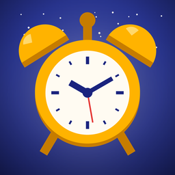

Política de privacidad
Despertador (Alarm Clock)
Última actualización: 4 de noviembre de 2026
Esta política explica qué información maneja la aplicación para Android Despertador (en inglés, Alarm Clock; la “App”), desarrollada por Oscar Ramírez (RamzLabs), Guadalajara, Jalisco, México (el “Desarrollador”), y cómo se utiliza.
- Tus alarmas y los audios que agregas se guardan solo en tu teléfono. La App no los sube a ningún servidor y el Desarrollador no puede verlos.
- La App no requiere crear una cuenta ni pide tu nombre, correo o teléfono.
- Las alarmas se programan en tu propio teléfono y suenan sin conexión a internet.
- La App muestra anuncios de Google AdMob, que recopila ciertos datos del dispositivo (como el ID de publicidad) para mostrar y medir anuncios.
1. Tus alarmas
La App solo guarda lo que tú configuras en ella:
- Cada alarma: hora, nombre (por ejemplo, “Trabajo” o “Gimnasio”), días en que se repite, sonido, vibración, volumen, si el volumen sube poco a poco, minutos para posponer y si está activada.
- Alarmas pospuestas y la hora a la que volverán a sonar.
Todo se guarda en el almacenamiento privado de la App dentro de tu dispositivo, y todo funciona sin internet. Para programar las alarmas, la App usa la hora y la zona horaria configuradas en tu teléfono.
Esta información no se envía a servidores del Desarrollador ni a terceros, no se analiza con fines publicitarios y no se comparte con Google ni con anunciantes.
2. Audios que agregas
- Cuando tocas Agregar audio del teléfono, eliges una canción o grabación con el selector de archivos de Android. La App lee solo ese archivo y guarda una copia en su almacenamiento privado, para que la alarma suene aunque el original se borre o cambie de lugar. El archivo original no se modifica.
- La App no explora el resto de tus archivos, no pide permiso para leer tu almacenamiento y no sube tus audios a ningún lado: solo los reproduce en tu teléfono cuando suena la alarma o cuando tocas Escuchar.
- Si quitas un audio de la lista, la App borra su copia y las alarmas que lo usaban pasan al sonido de alarma del teléfono.
Los sonidos incluidos en la App vienen dentro de ella y no se descargan.
3. Cómo suenan las alarmas
- Las alarmas se programan con el sistema de alarmas de Android en tu teléfono; no pasan por ningún servidor.
- Mientras una alarma suena, la App muestra una pantalla encima de la pantalla bloqueada y una notificación con el nombre y la hora de la alarma, con los botones para detenerla o posponerla. Esa información puede verla cualquiera que tenga tu teléfono a la vista en ese momento.
- Mientras suena, la App ajusta el volumen de alarma de tu teléfono al nivel que elegiste para esa alarma y lo regresa a como estaba cuando la detienes o la pospones.
4. Copia de seguridad de Android
Si tienes activada la copia de seguridad de Android en tu cuenta de Google, Android puede incluir los datos de la App (tus alarmas y, según el espacio disponible, los audios que agregaste) en esa copia para restaurarlos si cambias de teléfono o reinstalas la App. Esa copia la guarda Google en tu cuenta, según sus propias políticas, y el Desarrollador no tiene acceso a ella. Puedes desactivarla en Ajustes de Android → Google → Copia de seguridad (el nombre puede variar según el teléfono).
5. Publicidad (Google AdMob)
La App es gratuita y usa Google AdMob para mostrar anuncios: uno al abrir la App (o al volver a ella después de un rato), un banner debajo de la lista de alarmas y, de vez en cuando, un anuncio de pantalla completa al crear, editar, activar, desactivar o eliminar una alarma. Nunca se muestran anuncios de pantalla completa mientras suena una alarma ni cuando la App se abre porque sonó una alarma.
El SDK de Google Mobile Ads puede recopilar y procesar automáticamente:
- El ID de publicidad de Android.
- La dirección IP y la ubicación aproximada derivada de ella.
- Información del dispositivo y del sistema (modelo, versión de Android, idioma).
- Interacciones con los anuncios y datos de diagnóstico y rendimiento.
Google usa estos datos para mostrar anuncios, medir su rendimiento, prevenir fraudes y, cuando lo permites, personalizar la publicidad. Más información:
6. Consentimiento y control de los anuncios
- Si te encuentras en el Espacio Económico Europeo, el Reino Unido o Suiza, la App te pedirá tu consentimiento antes de usar tus datos para anuncios personalizados. Puedes cambiar tu elección en cualquier momento desde pantalla principal → menú (⋮) → Privacidad de anuncios.
- En cualquier país puedes restablecer o eliminar tu ID de publicidad, o desactivar la personalización de anuncios, en Ajustes de Android → Google → Anuncios (o Ajustes → Seguridad y privacidad → Otros ajustes de privacidad → Anuncios).
7. Permisos de la App
- Internet y estado de la red: solo para cargar anuncios. Tus alarmas y audios no se transmiten por internet.
- ID de publicidad: lo usa AdMob según lo descrito arriba.
- Notificaciones: para mostrar la alarma mientras suena, también en la pantalla bloqueada. Android 13 o posterior te pide permiso la primera vez que guardas una alarma.
- Alarmas y recordatorios (alarmas exactas): para que cada alarma suene al minuto exacto.
- Notificaciones de pantalla completa: para mostrar la pantalla de la alarma encima de la pantalla bloqueada.
- Servicio en primer plano (reproducción de audio): para reproducir el sonido de la alarma mientras suena, aunque la App esté cerrada.
- Vibración y mantener el teléfono activo: para vibrar y para que la alarma suene aunque la pantalla esté apagada.
- Ejecutar al iniciar el teléfono: para volver a programar tus alarmas después de reiniciar.
- Acceso a No molestar: lo declara el componente de alarmas que usa la App; la App no cambia tu configuración de No molestar.
La App no accede a tus contactos, fotos, cámara, micrófono ni ubicación precisa, y de tus archivos solo lee los audios que tú eliges.
8. Conservación y eliminación de datos
Tus alarmas permanecen en tu dispositivo hasta que las eliminas desde la App (desliza la alarma o usa Eliminar al editarla), borras los datos de la App desde los ajustes de Android o la desinstalas. Las copias de tus audios se borran al quitarlos de la lista, al borrar los datos de la App o al desinstalarla; los archivos originales siguen en tu teléfono. Como el Desarrollador no guarda copias, no puede recuperar tu información si se pierde. Para la copia de seguridad de tu cuenta de Google y los datos que trata AdMob, consulta las políticas de Google.
9. Seguridad
Tus alarmas y audios se guardan en el almacenamiento privado de la App, al que otras aplicaciones no pueden acceder. Te recomendamos proteger tu teléfono con bloqueo de pantalla.
10. Menores de edad
La App es una herramienta de uso general que no está dirigida a menores de 13 años. No recopilamos de forma intencional información de menores.
11. Cambios a esta política
Podemos actualizar esta política. Publicaremos la versión vigente en esta misma página con su fecha de actualización.
12. Contacto
Si tienes preguntas sobre esta política o sobre tus datos, escribe a oscarivanramirezruiz96@gmail.com.